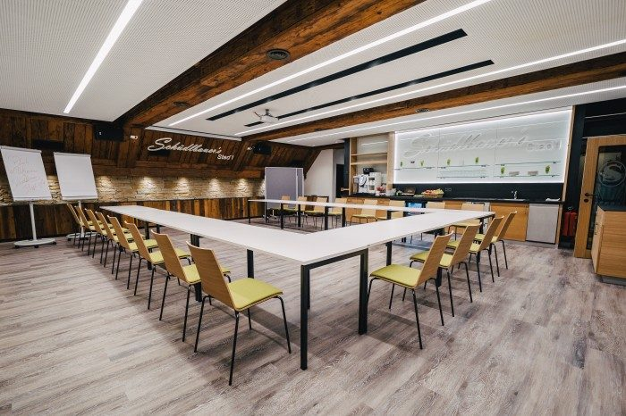

s G’wölb
Das historische Tonnengewölbe für die Trauung oder das Dinner im kleinen, sehr stimmungsvollen Rahmen.
Feiern & Seminare
Vom Trauungsgewölbe über den Garten bis in den Event-Stadl mit eigener Bar – und für Firmen: der Seminar-Stad’l mit moderner Technik abseits des Hotelbetriebs.
Heiraten im Schüdlbauer’s
Ihr wollt nicht irgendeine Hochzeit – sondern einen Tag mit viel Gefühl, gutem Essen, einer eigenen Bar, Partylaune und Platz für all eure Lieblingsmenschen? Dann seid ihr bei uns goldrichtig.
Ob im romantischen G’wölb mit ganz viel Atmosphäre oder unter freiem Himmel im Garten – wir schaffen den perfekten Rahmen für euren großen Tag.
Und wenn es dann richtig losgeht: ab in den Event-Stadl – der ideale Ort fürs Brautstehlen, Tanzen, Lachen und Feiern bis spät in die Nacht. Mit eigener Bar, Platz zum Durchatmen und garantiert keinem, der „jetzt leiser“ sagt.
Von der ersten Begrüßung bis zum letzten Absacker organisieren wir alles rund um eure Feier. Und ihr? Ihr lehnt euch zurück und genießt einfach.

Die Orte
Das historische Tonnengewölbe für die Trauung oder das Dinner im kleinen, sehr stimmungsvollen Rahmen.
Trauung unter freiem Himmel, Sektempfang unter der Pergola, Kaffee und Kuchen im Innenhof mit eigener Gartenbar.
Der große Saal mit eigener Bar – für Menü, Mitternachtssnack, Brautstehlen und durchtanzte Nächte.
Exklusiv für bis zu 30 Personen buchbar: Polterabend, Nachfeier oder die Runde nach dem offiziellen Teil. Rent a bar
Zimmer für eure Gäste gibt es direkt im Haus – elf Zimmer für bis zu 24 Personen. Zimmer & Preise ansehen
Seminar-Stad’l
Am Stadtrand von Braunau gelegen, gut erreichbar – mit kostenlosem, hauseigenem Parkplatz direkt vor der Tür.
Moderne Komfortzimmer, einladende Aufenthaltsbereiche und ein Stück Natur zum Durchatmen – perfekt für konzentriertes Arbeiten und erholsame Pausen.
Ob Seminar, Workshop oder Tagung im kleinen Kreis – unsere flexibel nutzbaren Räume passen sich Ihren Bedürfnissen an und liegen ruhig abseits des Hotelbetriebs.
Von moderner Technik bis zur persönlichen Unterstützung – wir sorgen dafür, dass Ihr Seminar reibungslos läuft.
Unsere ausgezeichnete Küche verwöhnt Sie und Ihre Gäste mit regionalen Spezialitäten – frisch, kreativ und auf Wunsch individuell abgestimmt.
Bestuhlung
Wir richten den Seminarraum individuell nach Ihrem Bedarf ein:
| Bestuhlung | Personen |
|---|---|
| U-Form | bis ca. 25 |
| Klassenzimmer (Reihen mit Tischen) | bis 40 |
| Kino (Reihen ohne Tische) | bis 60 |
Gerne beraten wir Sie persönlich zur optimalen Raumaufteilung für Ihre Veranstaltung.

Seminarausstattung
Sonderwünsche oder technische Extras? Kein Problem – wir unterstützen Sie gerne bei Planung und Umsetzung.
Ob Halbtagesseminar oder mehrtägige Veranstaltung: Wir bieten flexible Pauschalen, die auf Ihre Bedürfnisse abgestimmt sind – inklusive Raummiete, Technik, Verpflegung und vielem mehr.
Gerne erstellen wir auch ein maßgeschneidertes Angebot für Ihre Veranstaltung. Sie planen ein Seminar, eine Tagung oder ein Teammeeting? Einfach das Formular ausfüllen – wir melden uns zeitnah mit einem individuellen Angebot.